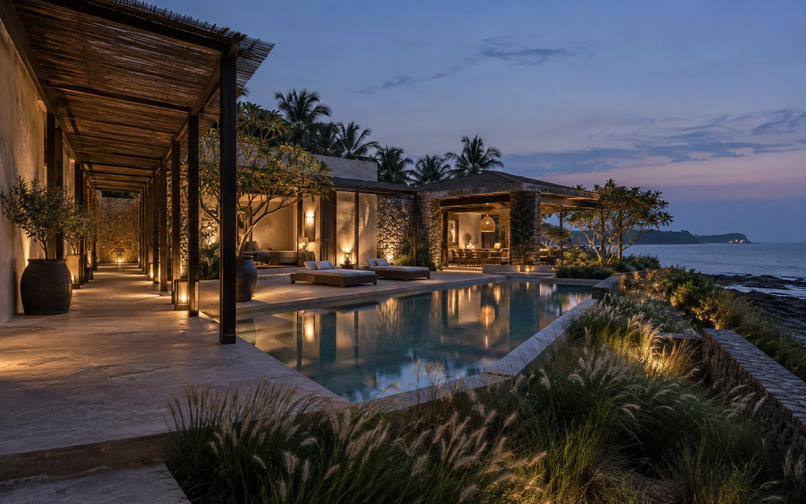

Break down the building
Separate volumes suggest a quieter scale. Shared spaces and private rooms can have different relationships to the garden.
A guest retreat organised around the walk between rooms.

The brief
Instead of one large building, this study imagines a small retreat as a group of low pavilions. The route from arrival to the guest rooms becomes part of the experience.
Three decisions
Separate volumes suggest a quieter scale. Shared spaces and private rooms can have different relationships to the garden.
Covered edges and planted paths would make walking comfortable. Lighting would need to support wayfinding without washing out the night.
Linen, servicing and maintenance need their own practical routes. A convincing hospitality plan cannot be based only on the guest-facing view.